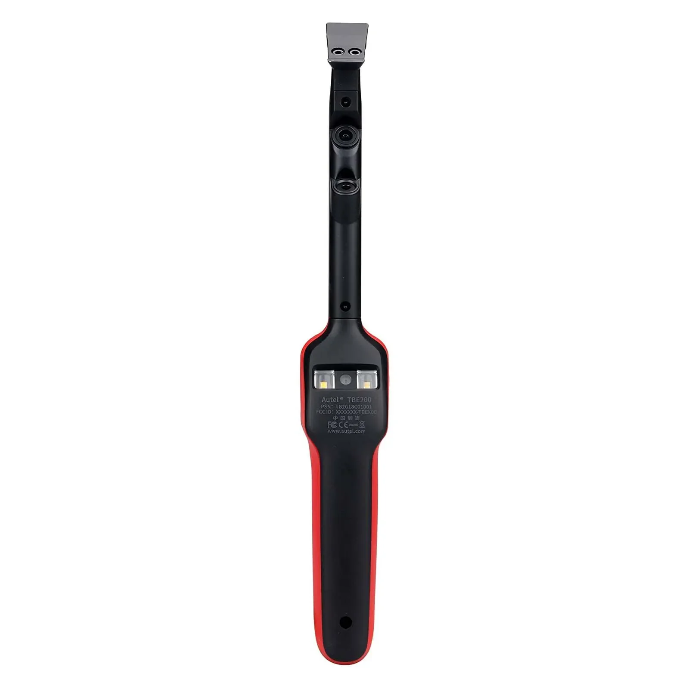
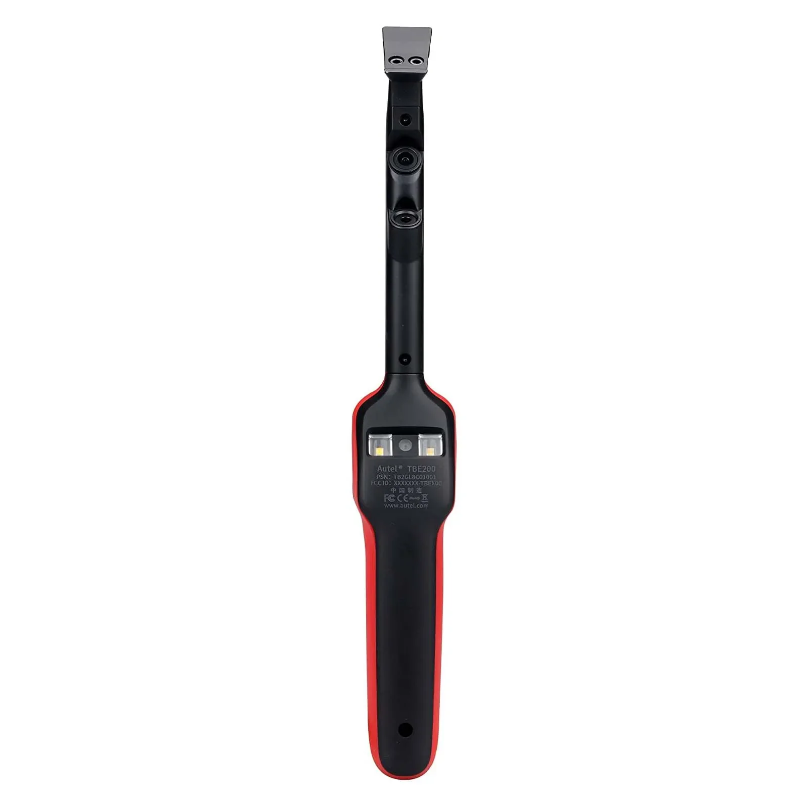

Autel MaxiTPMS TBE200E Testeur de pneus et de freins 2 en 1 (2022) pour ITS600E
Découvrez l'Autel MaxiTPMS TBE200E, votre solution tout-en-un pour des inspections complètes de vos pneus et freins. Cet outil de diagnostic 2-en-1 innovant combine la technologie laser et des capteurs avancés pour fournir des mesures précises et fiables en quelques secondes.
Le TBE200E est conçu pour permettre aux professionnels comme aux bricoleurs d'acquérir les connaissances nécessaires à un entretien efficace de leurs véhicules. Grâce à son interface intuitive et à sa conception conviviale, vous pourrez rapidement évaluer la profondeur de la bande de roulement de vos pneus et l'usure de vos disques de frein, garantissant ainsi une sécurité et des performances optimales sur la route.
- Mesure laser de la profondeur de la bande de roulement : Mesurez avec précision la profondeur restante de la bande de roulement de vos pneus grâce à la technologie laser sans contact, pour des mesures précises à chaque utilisation.
- Inspection de l'usure des disques de frein : Identifiez les disques de frein usés grâce au capteur intégré, assurant ainsi des performances de freinage optimales et prévenant les risques potentiels.
- Connectivité améliorée : Intégration fluide avec l'ITS600E pour une analyse et un reporting complets des données.
L'Autel MaxiTPMS TBE200E est votre allié de confiance pour des inspections fiables de vos pneus et de vos freins, vous permettant de conduire en toute sérénité.
L'Autel MaxiTPMS TBE200E est un outil révolutionnaire 2 en 1 conçu pour mesurer efficacement à la fois la profondeur de la bande de roulement des pneus et l'usure des disques de frein. Cet appareil compact combine les fonctionnalités d'un scanner TPMS traditionnel avec une technologie laser avancée pour des mesures précises.
- Mesure laser de la profondeur de la bande de roulement : Utilise un capteur laser de haute précision pour mesurer avec exactitude la profondeur de la bande de roulement des pneus, garantissant ainsi leur conformité aux normes de sécurité.
- Analyse de l'usure des disques de frein : Doté d'une technologie laser, il évalue l'usure des disques de frein et fournit des informations précieuses sur leur état.
- Grand écran couleur : Offre un écran couleur clair et facile à lire pour visualiser les mesures et les informations de diagnostic.
- Connectivité sans fil : Permet une communication fluide avec d'autres outils de diagnostic Autel, tels que l'ITS600E, pour un diagnostic complet du véhicule.
- Conception durable et portable : Fabriqué avec des matériaux de haute qualité, cet outil est conçu pour résister à une utilisation intensive tout en restant compact et portable pour une utilisation pratique en déplacement.
L'Autel Le MaxiTPMS TBE200E offre une gamme de spécifications conçues pour une performance et une expérience utilisateur optimales :
- Alimentation : Batterie lithium-ion rechargeable
- Plage de températures de fonctionnement : Large plage de fonctionnement adaptée à divers environnements
- Dimensions : Conception compacte et ergonomique pour une manipulation aisée
- Poids : Construction légère pour une portabilité optimale
L'Autel MaxiTPMS TBE200E offre de nombreux avantages aux techniciens professionnels et aux propriétaires de véhicules :
- Sécurité accrue : La mesure précise de la profondeur de la bande de roulement des pneus et de l'usure des disques de frein favorise la sécurité routière en identifiant les dangers potentiels avant qu'ils ne deviennent des problèmes graves.
- Gain de temps et d'efficacité : La fonctionnalité 2 en 1 simplifie les inspections, vous permettant de diagnostiquer efficacement l'état des pneus et du système de freinage en une seule opération. Fonctionnement.
- Diagnostics complets : La connectivité sans fil avec d'autres outils de diagnostic Autel permet une approche globale de l'entretien et de la réparation des véhicules.
- Prise de décision éclairée : Des mesures et analyses détaillées vous permettent de prendre des décisions éclairées concernant le remplacement des pneus, le changement des plaquettes de frein ou d'autres réparations.
L'utilisation de l'Autel MaxiTPMS TBE200E est simple et intuitive :
1. Allumez l'appareil et sélectionnez le mode de mesure souhaité (profondeur de la bande de roulement du pneu ou usure du disque de frein).
2. Positionnez le capteur laser conformément aux instructions de l'instrument.
3. L'appareil effectuera automatiquement les mesures et les affichera sur l'écran couleur.
4. Analysez les résultats affichés et prenez les mesures appropriées en fonction des conclusions.
Le système Autel MaxiTPMS TBE200E vous permet d'effectuer des inspections précises et efficaces des pneus et des freins, garantissant ainsi une sécurité et des performances optimales du véhicule.